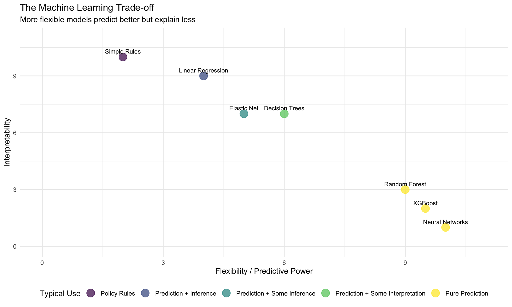
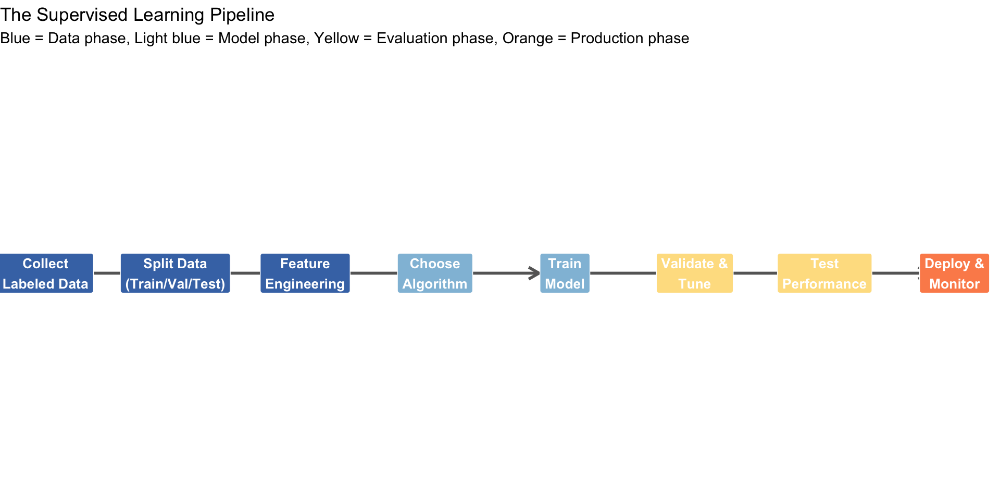
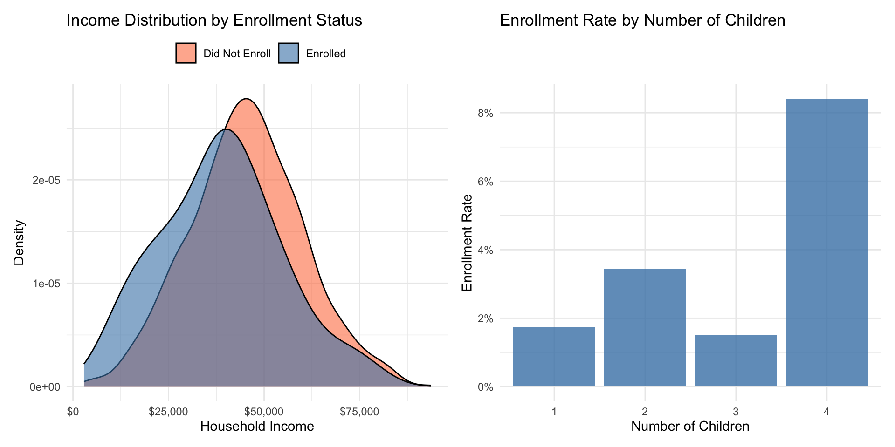
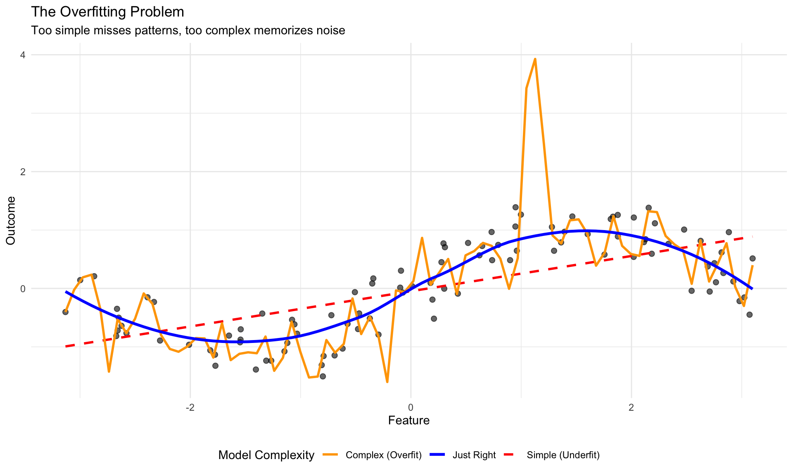
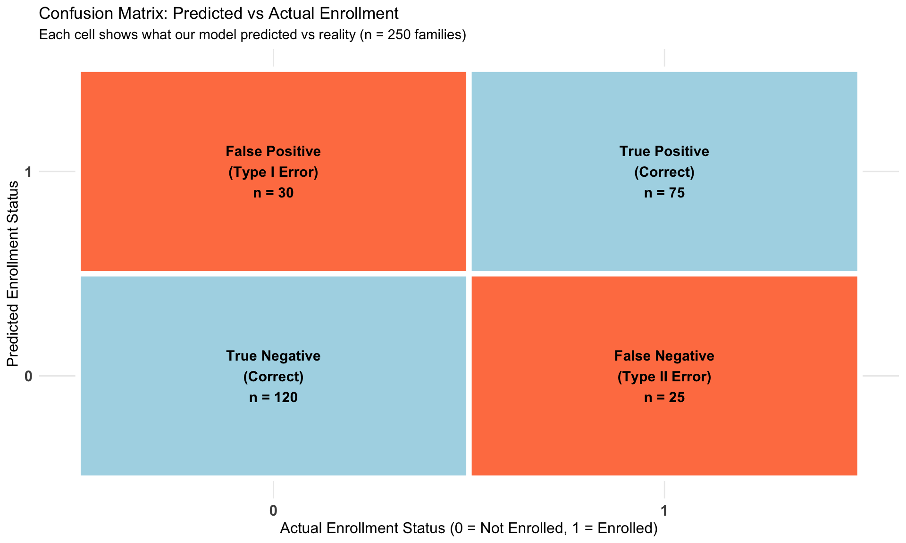
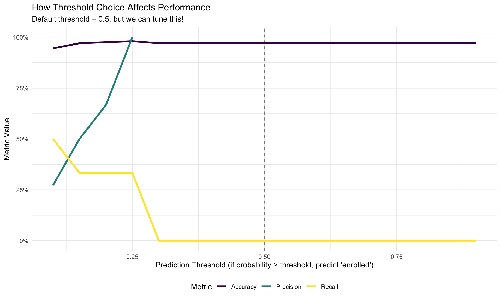
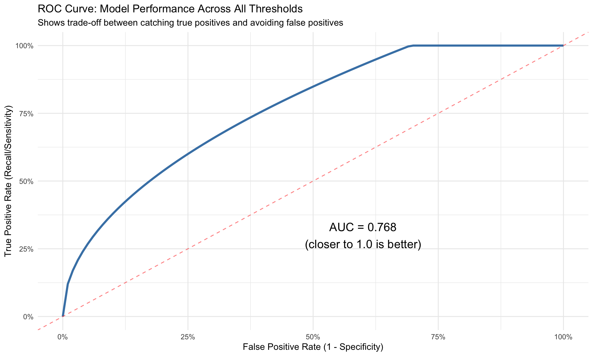
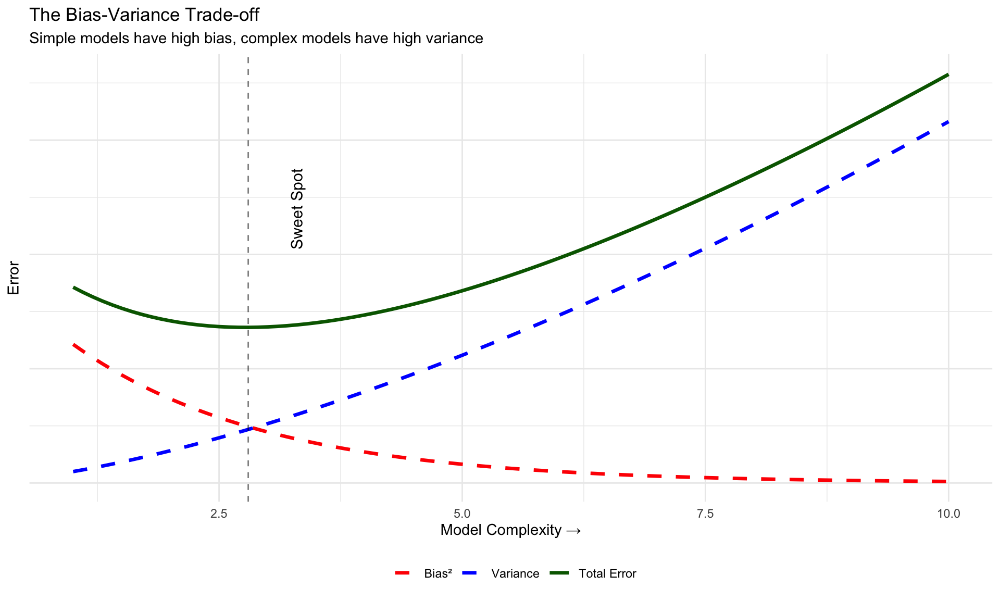
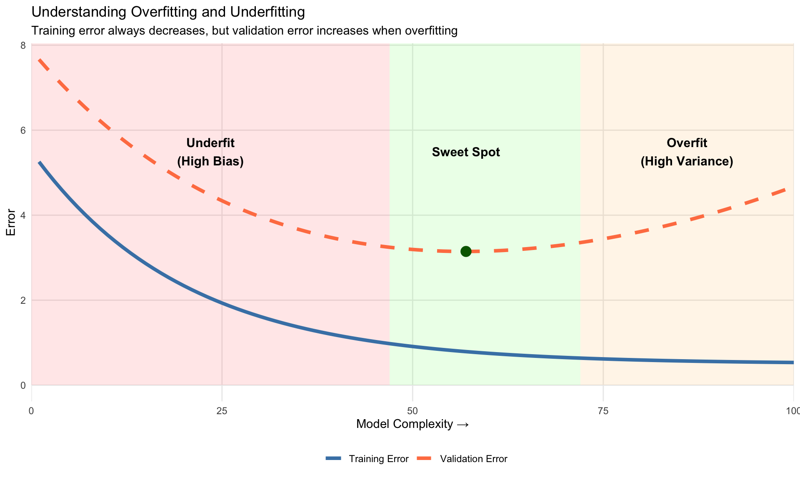
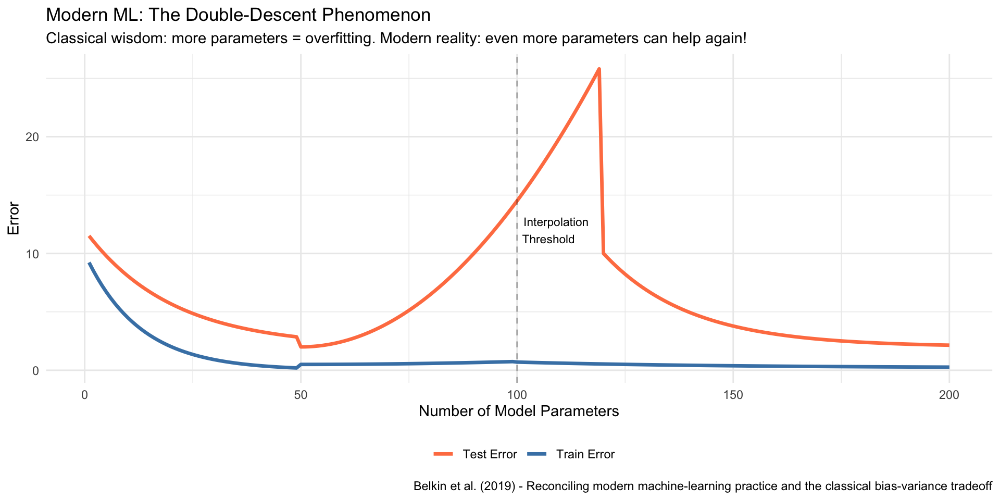

From Algorithms to Predictive Models
2025-11-10
By the end of this session, you’ll be able to:
Note
Key insight: Machine learning is not magic. It’s algorithmic pattern recognition applied systematically to data, with careful attention to validation and generalization.
Last week we learned: Algorithms are step-by-step procedures that solve specific problems
This week: What if we want the algorithm to discover the steps from data?
Traditional programming:
Rules + Data → AnswersMachine learning:
Data + Answers → RulesPolicy example:
The fundamental equation:
\[y_i = g(\mathbf{x}_i,\epsilon_i) = \underbrace{f(\mathbf{x}_i)}_\text{signal} + \underbrace{\epsilon_i}_\text{noise}\]
Where:
Machine learning goal: Find \(\hat{f}(\mathbf{x})\) that approximates \(f(\mathbf{x})\) as closely as possible
Important
Key assumption: We can group different events and treat them as instances of some more fundamental process. Each \(y_i\) is an example of the class \(Y\).
Prediction
Causal Inference
Machine learning is almost always used for prediction, not causal inference.
Why the distinction matters:
Some methods work for both, but many don’t:
Note
Key insight: Even when the same model (e.g., OLS) can be used for both, the objectives differ. Prediction cares about \(\hat{y}\) accuracy. Causation cares about unbiased \(\hat{\beta}\) estimates.

Policy implication: Often we need to sacrifice some accuracy for interpretability and stakeholder trust.
Supervised Learning
We have labels: \((y_i, \mathbf{x}_i)\)
Goal: Learn \(\hat{f}(\mathbf{x})\) to predict \(y\)
Process: 1. Show algorithm examples with answers 2. Algorithm learns patterns 3. Use learned patterns on new data
Examples: - Predicting housing prices - Fraud detection - Medical diagnosis - Loan default prediction
Unsupervised Learning
No labels: just \((\mathbf{x}_i)\)
Goal: Find hidden structure
Process: 1. Show algorithm data 2. Algorithm finds patterns 3. Human interprets patterns
Examples: - Customer segmentation - Community detection - Topic modeling - Anomaly detection

Each step has policy implications: Who labels? How do we split? Which features to engineer? What algorithm is transparent enough? What loss function and evaluation metrics match policy goals? How do we monitor for drift?
Policy scenario: City wants to predict which eligible families will enroll in a new childcare subsidy program to better plan capacity.
# Create synthetic program enrollment data
set.seed(123)
n_families <- 1000
program_data <- tibble(
family_id = 1:n_families,
household_income = rnorm(n_families, 45000, 15000),
num_children = sample(1:4, n_families, replace = TRUE, prob = c(0.4, 0.3, 0.2, 0.1)),
distance_miles = rexp(n_families, rate = 0.2),
previously_used_services = sample(0:1, n_families, replace = TRUE, prob = c(0.7, 0.3)),
parent_age = rnorm(n_families, 32, 6)
) %>%
mutate(
# True enrollment probability depends on these factors
enroll_prob = plogis(-3 +
-0.00003 * household_income + # Lower income → higher enrollment
0.4 * num_children + # More kids → higher enrollment
-0.15 * distance_miles + # Farther away → lower enrollment
1.2 * previously_used_services),# Prior use → higher enrollment
enrolled = rbinom(n_families, 1, enroll_prob)
) %>%
select(-enroll_prob) # Remove true probability (we wouldn't know this in real life)
# Show structure
head(program_data, 4)# A tibble: 4 × 7
family_id household_income num_children distance_miles previously_used_servi…¹
<int> <dbl> <int> <dbl> <int>
1 1 36593. 1 10.2 0
2 2 41547. 1 1.31 0
3 3 68381. 1 9.27 0
4 4 46058. 2 1.59 0
# ℹ abbreviated name: ¹previously_used_services
# ℹ 2 more variables: parent_age <dbl>, enrolled <int>
Key patterns: Lower income families and those with more children enroll at higher rates.
Step 1: Split the data (training, validation, test)
# Set aside 20% for final testing (unseen data)
test_indices <- createDataPartition(program_data$enrolled, p = 0.2, list = FALSE)
test_data <- program_data[test_indices, ]
train_val_data <- program_data[-test_indices, ]
# Further split remaining 80% into 75% train, 25% validation
train_indices <- createDataPartition(train_val_data$enrolled, p = 0.75, list = FALSE)
train_data <- train_val_data[train_indices, ]
validation_data <- train_val_data[-train_indices, ]
cat("Training set:", nrow(train_data), "families\n")Training set: 600 familiesValidation set: 200 familiesTest set: 200 families (NEVER TOUCHED until final evaluation)Important
Critical rule: The test set is locked away until the very end. We make ALL decisions using only training and validation data.

Policy risk: An overfit model might perform perfectly on historical data but fail completely on new cases!
# Train a logistic regression model (we'll learn more about this in Week 8)
model_formula <- enrolled ~ household_income + num_children +
distance_miles + previously_used_services + parent_age
# Fit the model on TRAINING data only
logistic_model <- glm(model_formula,
data = train_data,
family = binomial(link = "logit"))
# Get predictions on VALIDATION data
validation_data <- validation_data %>%
mutate(
pred_prob = predict(logistic_model, newdata = validation_data, type = "response"),
pred_enrolled = ifelse(pred_prob > 0.5, 1, 0)
)
# Show some predictions
validation_data %>%
select(household_income, num_children, enrolled, pred_prob, pred_enrolled) %>%
slice_head(n = 5) %>%
mutate(household_income = dollar(household_income),
pred_prob = percent(pred_prob, accuracy = 0.1))# A tibble: 5 × 5
household_income num_children enrolled pred_prob pred_enrolled
<chr> <int> <int> <chr> <dbl>
1 $36,592.87 1 0 0.3% 0
2 $70,725.97 2 0 1.4% 0
3 $27,927.95 2 0 3.9% 0
4 $40,573.93 2 0 2.3% 0
5 $58,172.00 1 0 0.7% 0Notice: We trained on training data but evaluated on validation data (data the model hasn’t seen).
The type of outcome determines the type of problem:
Outcome is categorical
Common evaluation metrics: - Accuracy - Precision & Recall - F1 Score - ROC-AUC
Outcome is continuous
Common evaluation metrics: - Mean Squared Error (MSE) - Root MSE (RMSE) - Mean Absolute Error (MAE) - R-squared
Note
Important distinction: Those were evaluation metrics (what we report). Models also use loss functions (what they optimize during training). Sometimes they’re the same, often they’re not!
Two related but distinct concepts:
What the model optimizes during training
Examples: - Cross-entropy loss (classification) - Mean Squared Error (regression)
What we report to stakeholders
Examples: - Accuracy, Precision, Recall (classification) - RMSE, MAE (regression) - ROC-AUC (classification)
Important
Policy implication: The model might optimize cross-entropy loss, but you evaluate and report using accuracy or F1 score because stakeholders understand those better. Choose evaluation metrics that align with your policy goals!

| Metric | Formula | Interpretation |
|---|---|---|
| Accuracy | \(\frac{TP + TN}{TP + TN + FP + FN}\) | Overall % correct |
| Precision | \(\frac{TP}{TP + FP}\) | Of predicted positives, % actually positive |
| Recall (Sensitivity) | \(\frac{TP}{TP + FN}\) | Of actual positives, % we correctly identified |
| F1 Score | \(\frac{2 \times Precision \times Recall}{Precision + Recall}\) | Harmonic mean of precision and recall |
All metrics derived from the confusion matrix: Use TP, TN, FP, FN to calculate each
Important
Critical: These metrics depend on your classification threshold! Many practitioners use 0.5 as a threshold (if predicted probability > 0.5 → predict “1”), but this is arbitrary and often suboptimal. You should tune the threshold based on the relative costs of false positives vs false negatives.
Also note: Model outputs (e.g., logit scores) are NOT necessarily calibrated probabilities—they’re scores that rank predictions but may need calibration to interpret as true probabilities.
Policy question: Which metric matters most? Depends on what errors cost more in your context!
Scenario: We’re allocating limited spots in the childcare program.
What it means: Model predicts enrollment, but family doesn’t enroll
Consequence: - Wasted capacity planning - Resources held for no-shows - Other families could have used spot
Cost: Moderate inefficiency
What it means: Model predicts no enrollment, but family would have enrolled
Consequence: - Turn away interested families - Program under-serves population - Families miss needed services - Bad PR, trust issues
Cost: High social cost
Important
Policy principle: The “right” metric depends on which error is more costly in your context. There’s no universal “best” metric!

Policy insight: Lowering threshold increases recall (catch more enrollees) but decreases precision (more false positives).

Key terms defined:
What makes a good ROC curve?
AUC interpretation varies by domain: - Medical diagnosis: Often requires AUC > 0.95 (life-or-death stakes) - Social science/policy: AUC > 0.7 may be acceptable (human behavior is noisy!) - Fraud detection: AUC > 0.85 typical (need to minimize false positives)
Remember our fundamental equation: \[ \begin{align} E[(y-\hat{y})^2] &= E[(f(\mathbf{x}) + \epsilon - \hat{f}(\mathbf{x}))^2]\\ &= \underbrace{E[(f(\mathbf{x}) - \hat{f}(\mathbf{x}))^2]}_\text{reducible error} + \underbrace{\text{Var}(\epsilon)}_\text{irreducible error} \end{align} \]
Reducible error breaks down further: \[\text{Reducible Error} = \underbrace{\text{Bias}^2}_\text{systematic error} + \underbrace{\text{Variance}}_\text{sensitivity to training data}\]
Bias: How far off is our model on average? (are we systematically wrong?). Variance: How much does our model change with different training data? (are we stable?). Irreducible error: Fundamental randomness we can never predict



Interpolation threshold: The point where the model has enough parameters to perfectly fit all training data (typically around n_parameters ≈ n_samples). This is where overfitting peaks in the classical view.
Surprising finding: Beyond the interpolation threshold, adding even MORE parameters can improve generalization! Very large neural networks find smoother fits. But for policy ML, we usually stay in the classical regime (left of the threshold).
Two types of parameters in machine learning:
1. Model Parameters (learned from data during training) - Coefficients in linear regression: \(\beta_0, \beta_1, ..., \beta_p\) - Weights in neural networks - Split points in decision trees
2. Hyperparameters (set before training) - Control how the algorithm learns - Cannot be learned directly from the training data - Must be chosen by the data scientist
Note
Key insight: Different hyperparameter values lead to different models with different performance!
k-Nearest Neighbors - \(k\): Number of neighbors - Distance metric (Euclidean, Manhattan)
Random Forest - Number of trees - Maximum tree depth - Minimum samples per leaf
Elastic Net - \(\alpha\): Balance between L1 and L2 - \(\lambda\): Regularization strength
Neural Networks - Number of layers - Neurons per layer - Learning rate - Dropout rate
XGBoost - Learning rate - Maximum depth - Number of estimators - Subsample ratio
Remember our three-way split: - Training set: Learn model parameters - Validation set: Tune hyperparameters and select best model - Test set: Final performance evaluation (never touched during development)
The hyperparameter tuning workflow:
Human decisions at every step:
Technical Decisions
Policy Decisions
1. Data Leakage: Using information not available at prediction time - Example: Using “program completion” to predict “program enrollment”
2. Target Leakage: Feature is caused by the target - Example: Using “number of ER visits” to predict “has chronic illness” (ER visits might be how we diagnosed them!)
3. Historical Bias: Training data reflects past discrimination - Example: Hiring algorithm trained on biased historical hiring decisions
4. Distribution Shift: Training and deployment contexts differ - Example: COVID changed everything—models trained pre-2020 may not work now
5. Feedback Loops: Model predictions change future data - Example: Predictive policing sends more police to predicted areas, generating more arrests there
Before deployment, ask:
Technical Validation
Ethical Validation
Important
Remember: A technically perfect model that erodes public trust or perpetuates inequality is a failed model in policy contexts.
We’ll explore specific algorithms in detail
Tree-based methods and unsupervised learning
Week 10: Modern tools and final exam - AI-augmented development - Integration with LLM APIs - Final exam
Next lab:
Please read:
Remember: Machine learning is a powerful tool for prediction, but it requires careful validation, ethical consideration, and human judgment to use responsibly in policy settings.